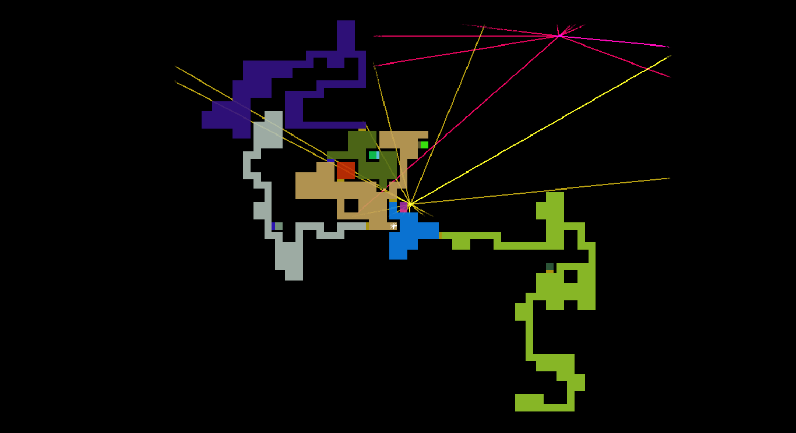
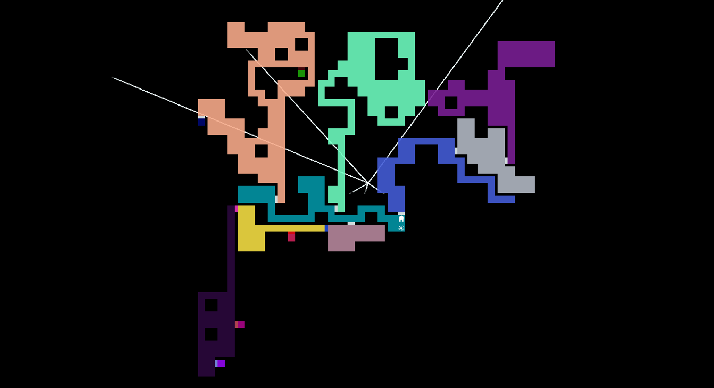
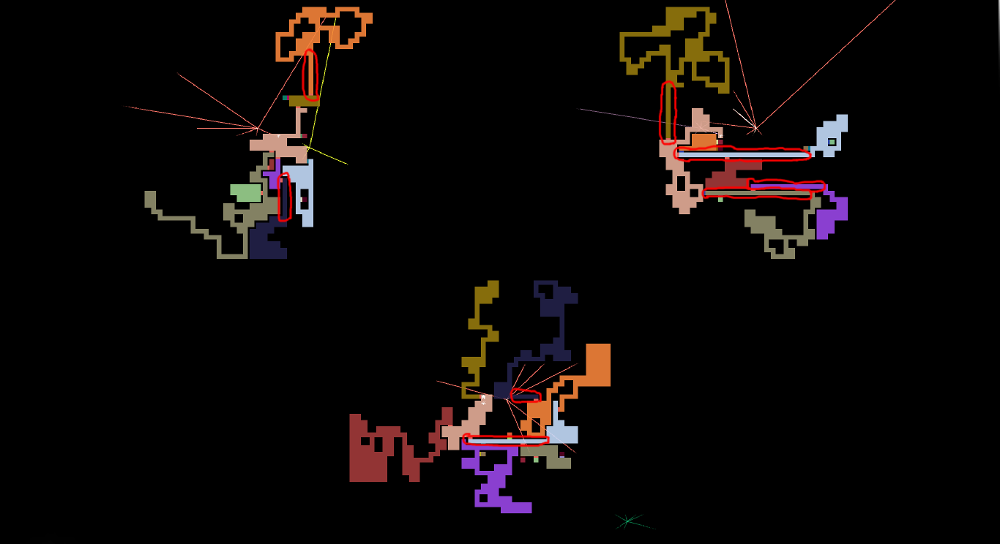

CONTENTS
Creating a World of Darkness: Part One - Maps
Intro:
Welcome to the first part of the blog series on the creation of Darkness Reclamation, specifically, focused on the topic of random generation. In this opening part, the topic will be divided between general generation logic, and specifically map logic.
General:
To create anything randomly generated, there are two key focuses on the thing: what attributes of it can be randomized and to what extents, and what limits will be placed to ensure what is created functions as is intended.
From these two basic ideas, all the generation being done in Darkness Reclamation is done. Lets take a look at how this applies to map generation.
Map Generation:
Attributes
A map, at least in DR, consists of two components: rooms, and doors. Rooms are represented by squares, and doors by rectangles.
A map consists of a 2D grid of room tiles, in game defaulting to 40x40 rooms. Each room contains 4 doors, which is either a door, a wall, or nothing.
With all these attributes defined, lets look at how these things are contained to create maps, and how the map generation can improve with further time in development.
 Limits
When creating a map, there has to be constraints put in place, so as to create a functioning map. Some basic constraints placed on DR map generation are:
These constraints lead to some basic maps, with all rooms connected, and a path of progression to all items present. In addition, it stores whether a room contains an item or not in memory, which helps with the next blog topic, of area generation.
Of course, the map generator in game deals with much more than just the above constraints, as it needs to build the maps asynchronously (at the same time) to create progression routes that intertwine between the maps, as well as record more general information about area shapes and purposes (for helping with area and music generation), and it needs to understand the abilities being placed in order to create level design that incorporates the players evolving abilities.
In the future of development, the map generation will become more refined, allowing for more solid map creation, helping the game to feel more crafted. An example of this kind of refinement are the recently developed hallway areas, which help add breadth to the map, and create areas where mobile enemies can thrive, shown in effect circled with red below.
Conclusion
Next blog, we'll be looking at area generation, and how it works to solidify the experience both in gameplay, and in atmosphere. Until next time!